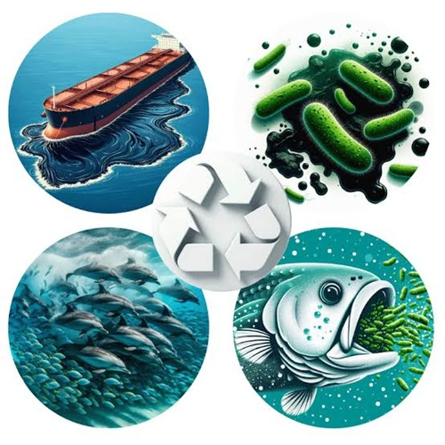

Guerra Microscópica: La Biorremediación como Esperanza Biológica
Frente a la devastation visible de las mareas negras, la ciencia ha encontrado una línea de defensa tan poderosa como invisible: la biorremediación. Cuando las barreras mecánicas fallan y los químicos tradicionales demuestran ser más tóxicos que el propio vertido, un ejército de microorganismos nativos —bacterias, hongos y algas especializadas— se convierte en la última resistencia del océano. Estos seres microscópicos poseen una capacidad evolutiva asombrosa: son capaces de utilizar los hidrocarburos complejos del petróleo como su principal fuente de energía y alimento, rompiendo las cadenas de carbono que asfixian el agua.
El proceso funciona como una digestión a escala molecular. Al aplicar nutrientes específicos como fósforo y nitrógeno en las zonas afectadas, los científicos logran bioestimular y multiplicar exponencialmente las poblaciones de estas bacterias "comepetróleo". En lugar de dispersar el contaminante de manera superficial, estos microorganismos lo metabolizan desde adentro, transformando los compuestos químicos altamente cancerígenos y pesados en sustancias completamente inofensivas para el entorno, principalmente agua líquida y trazas mínimas de dióxido de carbono.